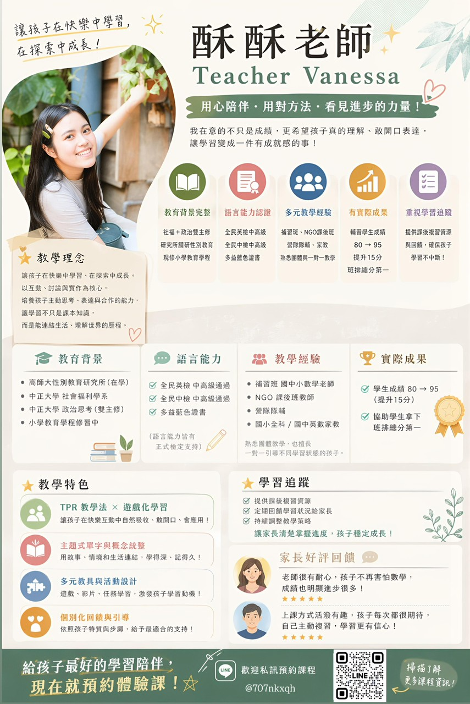

畢業於社會福利學系，目前就讀高雄師範大學性別教育研究所，並修習國小教育學程。
曾擔任補習班教師、NGO 課後班教師、營隊隊輔，也長期從事一對一家教。豐富的教學與陪伴經驗，讓我更懂得觀察孩子的需求，並協助他們找到適合自己的學習節奏。
我相信學習不該只有死背，因此除了課本知識，我更用心投入開發豐富的學習素材，讓孩子在「玩中學、做中學」：
孩子的成長需要老師與家長攜手合作。我會維持良好的親師溝通，定期讓您了解孩子今天的學習狀況、遇到的困難以及進步的地方，確保學習成效最大化。